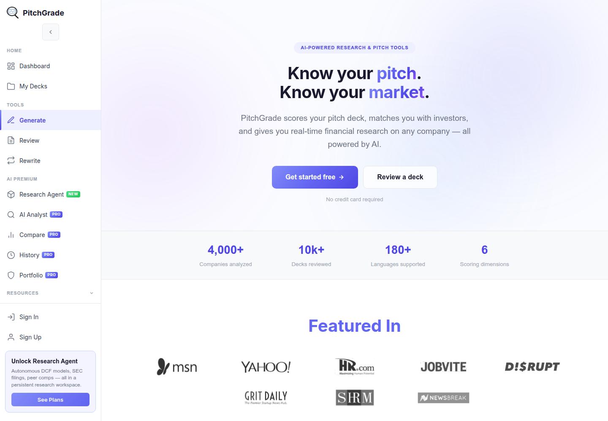
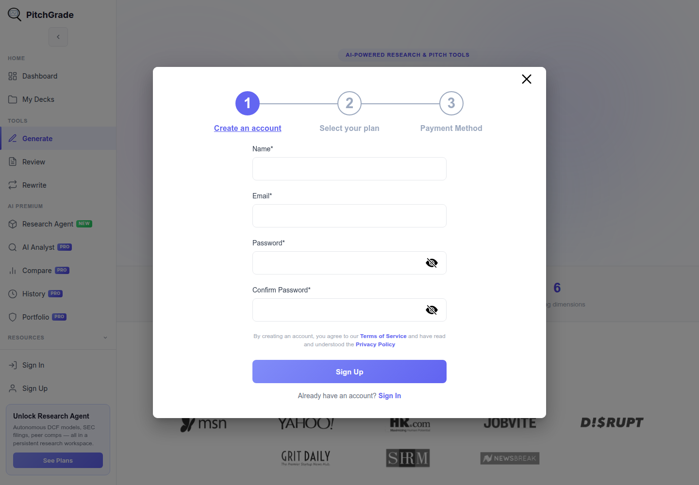

Profile
- Company
- PitchGrade
- Url
- https://pitchgrade.com/
- Source Category
- AI pitch-deck reviewers
- Research Status
- Deep Cited Research / Draft Complete
- Current Status
- live - fetched https://pitchgrade.com/ directly on 2026-07-19, HTTP 200, copyright '© 2026 Pitchgrade', actively shipping new features (Research Agent tier marked 'NEW').
- Founded Launch Year
- not found / no public source (Crunchbase profile exists at crunchbase.com/organization/pitchgrade but founding date not accessible without login; product referenced by review sites as operating since at least 2022-2023 but no primary-source confirmation found)
- Company Age
- not found / no public source
- Hq Country
- not found / no public source (no HQ disclosed on site; likely US-based given 'PRO' pricing in USD and English-first branding, but unconfirmed)
- Operating Area
- global - '180+ Languages supported' for deck analysis
- Target Users
- startup founders preparing pitch decks; secondary audience of financial/investment analysts (via 'AI Analyst PRO' and Research Agent financial-research tools)
- Product Category
- AI pitch/deck review and generation; AI-powered financial/investor research platform; founder-investor / capital (light-touch matching against named VC firms)
Product Flows
- Swipe Card Interface
- not found / no evidence of a swipe gesture UI on the deck review or investor-fit features; investor fit is shown as a comparison against 20+ named investor profiles (Sequoia, a16z, YC, etc.), not a card-swipe mechanic
- Mutual Match
- not found / no evidence of mutual opt-in matching; investor 'matching' is a one-way fit-scoring feature, not a two-sided connection
- Ai Matching Scoring
- yes - investor matching / AI research agent
- Ai Deck Scoring
- yes
- Founder To Founder Flow
- not found / no evidence - no cofounder or peer-founder feature
- Founder To Investor Flow
- yes
- Project Profiles
- not applicable / not found
- Messaging Collaboration
- not found / no public source
- Mobile App
- not found / no App Store or Google Play listing located; web-only
- Web App
- yes
Security & Documents
- Nda Gated Unlock
- not found / no public source (original pass listed 'yes' but no NDA/confidentiality-gated unlock mechanism found in current feature set; downgraded)
- Data Room
- not found / no public source
- E Signature
- not found / no public source
- Meeting Prep Ai Briefing
- not found / no public source, though the 'Research Agent' (autonomous DCF models, SEC filings, peer comps, investment thesis generation) could plausibly be repurposed as meeting prep, it is marketed as general financial research, not meeting-specific briefing
Pricing, Funding & Traction
- Pricing Model
- Freemium with a paid 'PRO' tier gating the Research Agent, AI Analyst, Compare, History, and Portfolio tools; free tier allows deck review with 'No credit card required'. Exact price points not shown on scraped homepage (plans load dynamically).
- Business Model
- Freemium SaaS subscription (PRO tier upsell)
- Total Funding
- not found / no public source; no funding announcement or investor list located, Crunchbase profile exists but funding amount not accessible
- Funding Rounds
- not found / no public source
- Investors
- not found / no public source
- Funding Source Type
- likely bootstrapped (no funding announcements found)
- Last Funding Date
- not found / no public source
- Users Traction
- 4,000+ Companies analyzed; 10k+ Decks reviewed; 180+ Languages supported; 6 Scoring dimensions (all homepage self-reported stats)
- Deals Funding Facilitated
- not found / no public source
- Partnerships
- 'Featured In' section referenced on homepage but specific outlets not captured in scrape
- Media Coverage
- not found / no specific named press coverage located in search
- Product Update Activity
- active - 'Research Agent' and 'AI Analyst PRO' explicitly marked 'NEW' on the current homepage, indicating a recent (2025-2026) major feature expansion beyond the original deck-review tool into financial research
- Acquisition Rebrand History
- not found / no evidence of acquisition or rebrand
Scores
- Product Overlap Score
- 4
- Feature Maturity Score
- 3
- Market Traction Score
- 2
- Funding Strength Score
- 1
- Ai Depth Score
- 3
- Nda Security Strength Score
- 1
- Network Moat Score
- 2
- Direct Threat Score
- 2.3
- Source Confidence
- Medium
Evidence Notes
- Primary Sources
- https://pitchgrade.com/
https://pitchgrade.com/templates/y-combinator-pitch-deck-template - Secondary Sources
- https://www.crunchbase.com/organization/pitchgrade
https://www.linkedin.com/company/pitchgrade - Unsupported Claims
- '4,000+ Companies analyzed' and '10k+ Decks reviewed' are homepage self-reported and not independently verified.
- Contradictions
- Original pass marked nda_gated_unlock=yes with no supporting evidence found in this deeper pass; downgraded to not found.
- Last Checked
- 2026-07-19
- Notes
- PitchGrade is pivoting/expanding from a pure deck-review tool into a broader AI financial research platform (Research Agent, live stock data, company comparisons) - this is a meaningfully different product direction than BizMatch's matchmaking focus, reducing direct network-moat overlap despite decent deck-scoring depth. Company identity (founders, HQ, funding) remains unusually opaque for a product with real traffic/feature investment.
Registration Flow
Research date: 2026-07-19. Screenshots are sanitized public copies from the private registration-flow capture set; credentials, tokens, verification links/codes, browser chrome, and private identifiers are not intentionally published.
Outcome: stopped at required truthful-details / submission boundary.
Stop point: Untouched Create an account stage of the official three-step signup modal, before entering Name, Email, Password, or Confirm Password and before account submission, plan selection, payment method, email verification, pitch-deck upload, investor matching, fundraising activity, KYC, investment, or financial commitment
Blocker / boundary: PitchGrade's first registration stage requires a real Name, but the authorized credential file supplies only the registration email and a site-specific password. No identity was invented. The same modal explicitly shows that the next stages are 'Select your plan' and 'Payment Method,' both defined task stop conditions, so the form was left untouched and not submitted.
- Official PitchGrade homepage and free-start entry. PitchGrade's official homepage presents AI pitch-deck scoring, investor matching, and financial research. It exposes Sign Up and Get started free actions and states 'No credit card required.' The sidebar also marks several premium features as PRO and provides a See Plans action.
- Untouched three-stage registration flow and stop point. The official Sign Up action opens a modal whose progress indicator explicitly shows three stages: 1 Create an account, 2 Select your plan, and 3 Payment Method. Stage 1 requires Name, Email, Password, and Confirm Password, and states that account creation agrees to the Terms of Service and acknowledges the Privacy Policy. The form was captured empty. The flow stopped because no authorized real name was supplied and proceeding would enter plan selection followed by payment.

